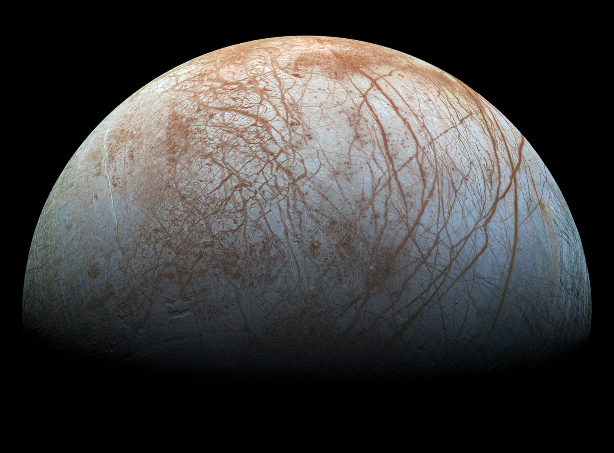
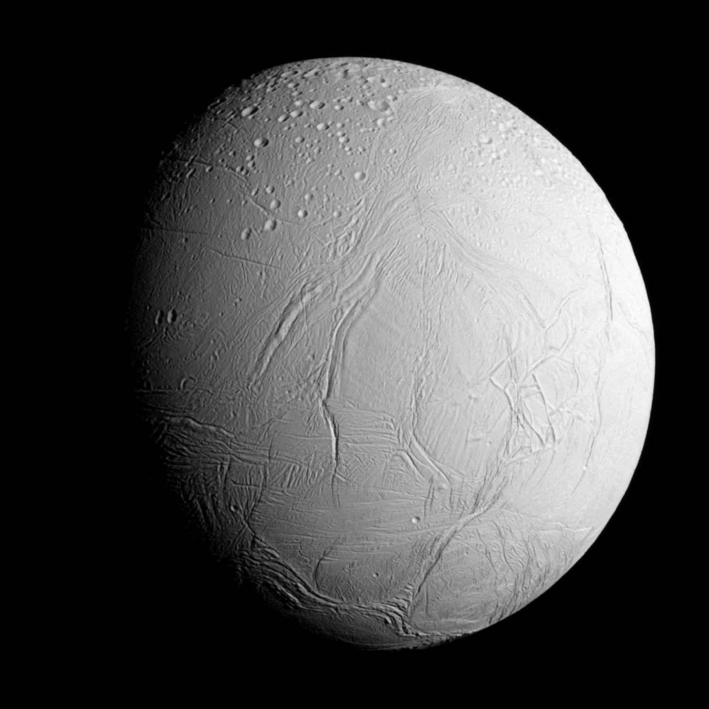
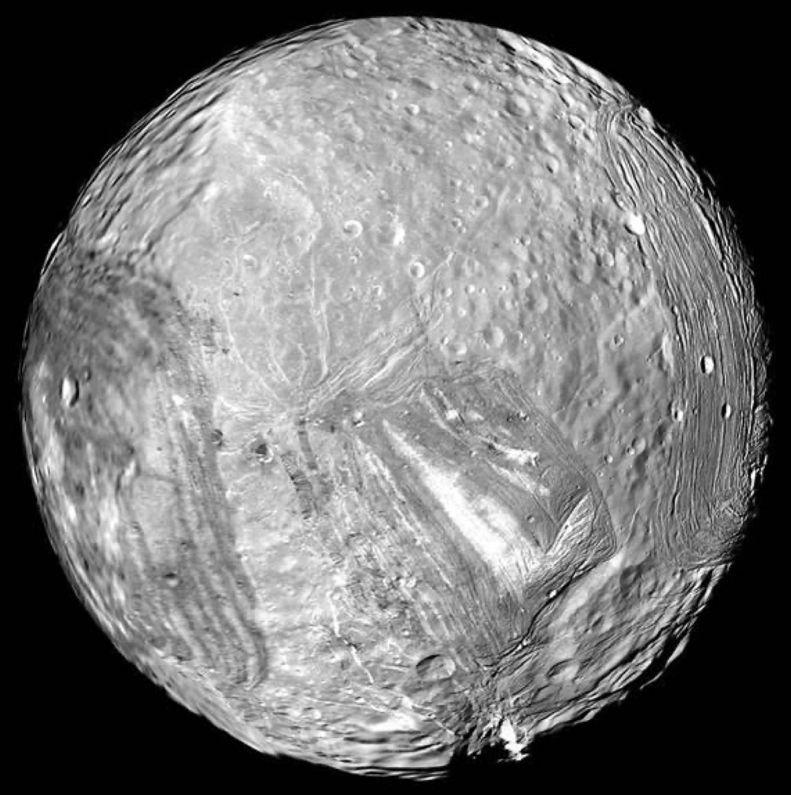

Ashma Pandya
Ph.D. Candidate in Chemistry·Caltech·NSF Graduate Research Fellow
Exploring the chemistry of planetary surfaces through laboratory spectroscopy, radiation chemistry, and telescopic observations.
My research investigates how radiation affects the surfaces of icy worlds, helping us interpret observations from spacecraft and telescopes and better understand the evolution of planetary surfaces.
About
I am a Ph.D. candidate at Caltech working with Mike Brown. My work focuses on laboratory planetary science, using spectroscopy and radiation chemistry to investigate the processes shaping icy worlds across the Solar System. I am particularly interested in understanding how energetic radiation transforms planetary materials and how those products can be identified using telescopic observations. By recreating planetary surface conditions in the laboratory, I aim to bridge the gap between experimental chemistry and spacecraft observations, improving our understanding of the composition and evolution of worlds such as Jupiter’s moon Europa.
Before joining Caltech, I completed undergraduate degrees in Chemistry and Biophysics at Johns Hopkins University, where I worked in prebiotic chemistry with Dr. Stephen Fried, studying peptide self-assembly and origins-of-life chemistry. Earlier research with Dr. Andy Nguyen at the University of Illinois Chicago focused on designing porous peptide-based materials through supramolecular self-assembly. I also interned with Dr. Anshu Bhardwaj at the Institute of Microbial Technology during high school in India, working on antibiotic resistance and later on identifying potential COVID-19 inhibitors.
Although my research experience spans multiple fields which may seem distinct, they are united by a common interest in understanding how chemistry gives rise to complex systems — from molecular self-assembly and biological evolution to the chemical evolution of planetary surfaces.
Research
Planetary Science
Caltech

My current research focuses on radiation-driven chemistry on icy planetary bodies, particularly Europa. Using a cryogenic ultra-high-vacuum setup, electron irradiation, infrared spectroscopy, and residual gas analysis, I investigate how energetic particles alter carbonate minerals and produce CO₂ under Europa-like conditions.
These laboratory studies provide critical context for interpreting observations from missions and telescopes such as the James Webb Space Telescope and help evaluate competing hypotheses for the origin and reservoir of CO₂ observed on Europa and other icy satellites. My recent work constituted the first experimental evidence that carbonate salts can be contributors to Europa’s CO₂ budget. Besides carbonates on Europa, I also contributed to research about the moons of Saturn and Uranus.
- The Planetary Science Journal — 10.3847/PSJ/ae595b
- The Planetary Science Journal — 10.3847/PSJ/ade807
- PNAS — 10.1073/pnas.2519276123


Origins of Life Chemistry
Johns Hopkins University
As a junior, I worked with Dr. Stephen Fried on a project exploring the potential of amyloid-forming peptides to serve as catalytic molecules that undergo self-replication through wet–dry cycles, providing insight into possible mechanisms for molecular evolution before life emerged.
Supramolecular Chemistry
University of Illinois Chicago
In my first two years of undergrad, I worked with Dr. Andy Nguyen to design self-assembling peptide frameworks capable of forming porous, protein-like architectures with tunable molecular recognition. This work combined peptide design, structural characterization, and materials chemistry to engineer and characterize functional supramolecular assemblies.
- Journal of the American Chemical Society — 10.1021/jacs.2c02146
- Biomacromolecules — 10.1021/acs.biomac.3c01418
Bioinformatics
CSIR — Institute of Microbial Technology (High School)
Early in my research career, I worked with Dr. Anshu Bhardwaj at the CSIR–Institute of Microbial Technology, applying computational approaches to challenges in infectious disease and drug discovery. I analyzed antimicrobial resistance trends across priority bacterial pathogens and co-authored a book chapter on systems-level approaches to drug repurposing. This experience introduced me to data-driven biological research and the role of computational methods in addressing global health challenges. I also contributed to the SARS-CoV-2 Inhibitor Open Repository (SAVIOR), a crowdsourced resource that curated potential COVID-19 inhibitors from open chemical libraries during the pandemic.
Publications
A complete, up-to-date list of my publications is available on Google Scholar.
News & Honors
- NSF Graduate Research Fellow
- Barry Goldwater Scholar
Additional honors, links, and press coverage to be added.
Teaching & Outreach
I enjoy mentoring students at different stages of their scientific careers. At Caltech I have mentored undergraduate researchers through the Caltech Connection program, and tutored general chemistry through the Caltech Y RISE program.
Previously, at Johns Hopkins, I served as a teaching assistant for both an introductory computing course and the First Generation Undergraduate Research Experience (FiGURE), where I mentored first-year students conducting research in prebiotic chemistry.
Contact
I’m always happy to connect about planetary science, spectroscopy, laboratory astrophysics, or opportunities for collaboration — as well as to answer any questions about the field or about pursuing research and a Ph.D.